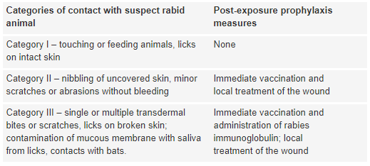

| Furious/encephalitic | Dumb/Paralytic |
|---|---|
| Hydrophobia/aerophobia Hyperactivity Disorientation Combative behaviour Alternating periods of lucidity Spasms Pharyngeal pain/difficulty swallowing Hypersalivation | General Malaise Headache Ascending paralysis leading to quadriplegia with sphincter involvement |

Consider also
Treatment is supportive.